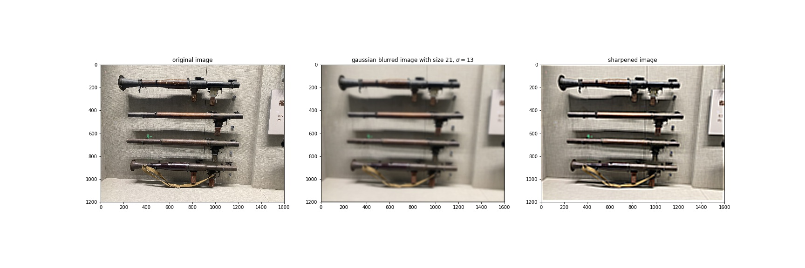
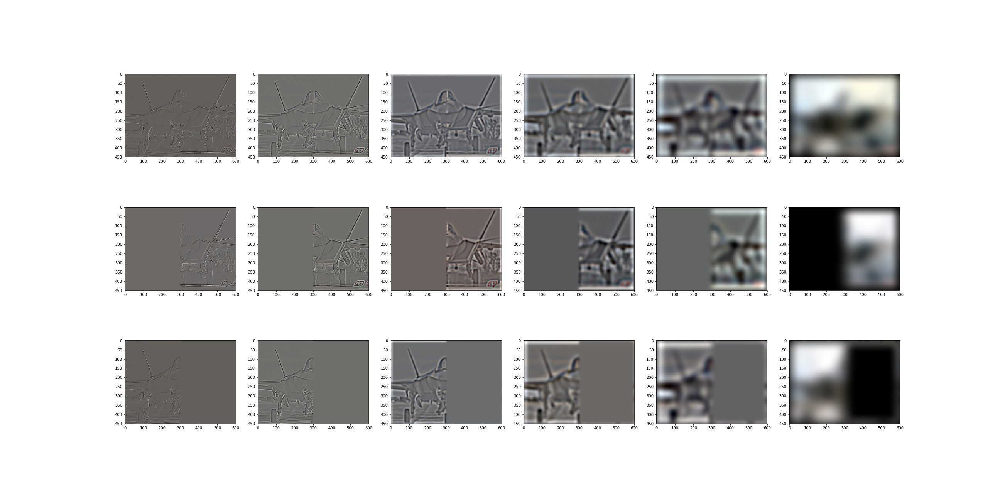

CS194 Project 2
Fun with Filters and Frequencies
Xuxin Cheng, CS194-26-agv
use 150% zoom to get best experience.
Part 1 Fun with Filters
1.1 Finite Difference Operator
threshold=0.12 when binarizing gradient magnitude image.

1.2 Derivative of Gaussian (DoG) Filter
From part 1.1 we can see that there are a lot of noises in gradient magnitude image. To resolve this problem we can use a gaussian filter to blur the image first and then apply derivative operator. Furthermore we can combing the 2 processes as one.

We can see that DoG filter has exactly the same effect as blurring the image first and then taking derivatives.
1.3 Image Straightening
Proposed rotation angles are [-10, -8, -6, -4, -2, 0, 2, 4, 6, 8, 10, 12] in degrees. When computing gradient magnitude, I use a Gaussian Filter of size , to reduce noise.
Failed case:
The original image of the failed cas was actually taken horizontally. We can see that this algorithm does not work well on images having significant perspective effects or not having much information about the direction of gravity, which cause horizontal and vertical edges appear not as they are in reality.
Part 2 Fun with Frequencies!
2.1 Image "Sharpening"
For a blurry image, we want to extract the high frequecy and add it to the original image so as to have more information in high frequecy. This process can be described as: , where is the sharpened image, is the original image, is a parameter representing how much high frequecy we want to add, is unit impulse and is a Gaussian Kernel.
Due to the fact that the Gaussian blurred photo has lost information of high frequecies, we cannot get the same quality of unblurred photo even after sharpenning. This operation only increases the proportion of high frequecies of blurred images which do not contain higer frequecies of original image. So we will not able to recover information that does not exit in blurred images.
Here we choose .
Below is the Taj example.
For another image we choose because it is more blurry.

2.2 Hybrid Images
The main idea of hybrid images is to have one image in low frequency and another one in high frequency. So when you look at the image from different distances, you will see two different images.
Below is the example of Derek and nutmeg.
J-20 or F-35? I choose 2 of the most advanced stealth fighters in the world. If you are a military fan, you should be able to distinguish them.
Bells & Whistles
Below is the example with color images as inputs.
From the color image we see that it is harder to see a cat in the first place compared to the gray image given the same set of parameters, and Derek seems clearer. It works for better for low-frequency component but on the contrary for high-frequency component in color images.
2.3 Gaussian and Laplacian Stacks
I found that using fixed Gaussian kernel will result in almost invisible laplacian images, so I construct the stack with of Gaussian kernel in a incremental way. Because will become larger, we also need a large size of Gaussian. Instead of using a large size from the beginning, I choose to increment the size of the Gaussian too to save computation. .
To make the Laplacian images more visible, I normalize the images to before showing.
Mona lisa
Lincoln and Gala
Derek and nutmeg (black&white)
J20 & F35
Derek and nutmeg (color)
2.4: Multiresolution Blending
Oraple
Blended image at different resolutions
JF2035
Blended image at different resolutions

Snowboarding
Blended image at different resolutions
Conclusion
The most interesting part for me is image blending. Before I can always saw some cool stuff combining two images together seamlessly but I don't know how it worked. Today I finally got a chance to implement the algorithms my self. And the result is good although not perfect. I will try other algorithms such as gradient least square methods.